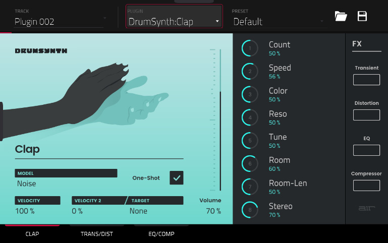

DrumSynth
The AIR DrumSynth plugins emulate the sound of classic drum machines and feature multiple synthesis types, advanced modeling and carefully crafted, built-in effects to create powerful contemporary drum sounds.
You can add the following drum types as individual plugins per track: Clap, Crash, HiHat, Kick, Perc, Ride, Snare and Tom. Each of these instruments has comprehensive synthesis and effects sections described below.
In each plugin, you can quickly enable or disable the built- in effects (Transient, Distortion, EQ and Compressor) while viewing any of the tabs listed below by tapping the buttons on the right side of the touchscreen under FX.
Drum Sound
Use this tab to adjust the basic settings for the drum sound. You can also use the knobs on this tab to quickly adjust up to eight parameters specifically chosen for each sound.
Parameter Description Value Range
Model Type of drum sound emulated. Varies
One-Shot Allows the drum sound to play entirely when triggered or only for how long the note length is set.
Enabled, Disabled
Velocity Amount of incoming Velocity applied. When set to 0, all notes will sound as if Full Level.
0–100%
Velocity 2 Amount of additional Velocity envelope that can be used to control a parameter.
-100 – 0 – +100%
Target Select the Parameter where the Velocity 2 information is sent.
Param 1–8
Gain Volume level of the drum sound. -Inf, -68.0 – 0 – +12.0 dB
Parameter Knobs
Each drum sound has up to eight associated parameters that can be used to further shape the sound. The available parameters vary based on the type of drum sound selected. Use the knobs to adjust the selected parameter.
Varies
Trans/Dist
Use this tab to adjust the settings for the Transient and Distortion effects.
Parameter Description Value Range
Transient Attack Decreases or increases the amount of transient attack applied to the signal.
-100 – 0 – +100%
Shape Adjusts the shape of the processed transient. 0–100%
Sustain Percentage of sustain envelope subtracted from or added to the transient effect.
-100 – 0 – +100%
Distortion Pre-Shape Increases or decreases the high-end tone of the incoming audio signal pre-distortion.
-100 – 0 – +100%
Drive Amount of drive applied. 0–60 dB
Threshold Signal level after which the distortion will be applied.
-20.0–0.0 dB FS
High Cut Center frequency of the distortion signal high- cut filter.
1.00–20.0 kHz
Mix Wet/dry amount of the distortion effect. 0–100%
EQ/Comp
Use this tab to adjust the settings for the EQ and Compressor effects.
Parameter Description Value Range
EQ High Freq Center frequency for the High EQ band. 1.20 – 20.0 kHz
High Gain Amount of gain applied to the High EQ band. Cut, -12.0 – 0 – +12.0 dB
High Mid Freq Center frequency for the High Mid EQ band. 120 Hz – 16.0 kHz
High Mid Q Width of the High Mid EQ band. 0.40–10.00
High Mid Gain Amount of gain applied to the High Mid EQ band.
-18.0 – 0 – +18.0 dB
Low Mid Freq Center frequency for the Low Mid EQ band. 40.0 Hz – 8.00 kHz
Low Mid Q Width of the Low Mid EQ band. 0.40–10.00
Low Mid Gain Amount of gain applied to the Low Mid EQ band.
-18.0 – 0 – +18.0 dB
Low Freq Center frequency for the Low EQ band. 20.0 Hz – 1.00 kHz
Low Gain Amount of gain applied to the Low EQ band. Cut, -12.0 – 0 – +12.0 dB
Compressor Ratio Amount of compression applied. 1.0:1 – 100.0:1
Attack Length of time to apply the compression. 100 us – 300 ms
Threshold Signal level after which the compressor will be applied.
-60.0–0.0 dB
Output Amount of additional output gain for the compressed signal.
0.0–30.0 dB
You can also use the DrumSynth:Multi plugin to access all DrumSynth sounds from one plugin, which includes additional dedicated effects and mixing controls.
Note: You can only have one DrumSynth:Multi plugin active per project.
DrumSynth 1–8 / Trans/Dist / EQ/Comp
Use the first eight tabs in the Multi to control the same parameters as the individual DrumSynth plugins. Tap each tab to cycle between the Drum Sound view, the Trans/Dist view, and the EQ/Comp view.
Send FX
Use this tab to adjust the settings for the Delay, Diffuser and Reverb effects.
Parameter Description Value Range
Delay Time Length of time between the dry signal and the delayed signal.
1/32 – 8/4
Ratio Reduces the delay Time in either the Left or Right stereo field. This is useful for creating offset, panned delays.
L 100:50, R 50:100
Feedback Amount of delay signal fed back into the delay line.
0–100%
Filter Freq Sets the center frequency of the filtered delay signal.
1.00 – 20.0 kHz
Reso Amount of resonance of the feedback signal. 0–100%
Reso Freq Center frequency for feedback resonance. 100 Hz – 10.0 kHz
Diffuser Delay Delay time between the dry signal and the diffused signal.
1/64 – 4/4
Feedback Amount of diffused signal sent back into the delay line.
0–100%
Diffusion Rate of increasing density of reverb reflections. At lower settings, the sound of individual reflections is more present. At higher settings, reflections are more uniform.
0–100%
Bright Adjusts the high-end tone of the diffused signal.
0–100%
Reverb Mode Type of reverb applied. Hall, Stadium, Room, Abstract
Time Length of reverb tail. 0.4 s – +Inf s
Low Cut Center frequency for the reverb low-pass filter.
1 – 1000 Hz
High Cut Center frequency for the reverb high-pass filter.
1.00 – 20.0 kHz
Mixer / FX / Sends
Use this tab to mix the individual drum sounds as well as control their effects. The Mixer / FX / Sends tab contains three different views that can be accessed by tapping the tab at the bottom of the display. Use the Mixer view to adjust the volume, panning, muting, and soloing for each drum.
Tap the 1–8 icons to mute or unmute the selected drum.
Tap the S icon to solo the selected drum.
Tap and drag the pan slider to adjust the drum panning. Alternatively, tap the slider and use the encoder, or use the appropriate knob in Screen mode.
Tap and drag the volume slider to adjust the drum volume. Alternatively, tap the slider and use the encoder, or use the appropriate knob in Screen mode.
Use the FX view to enable or disable the Transient, Distortion, EQ and Compressor effects for each drum sound.
Tap the FX box to enable or disable the selected FX on the selected drum.
Use the Sends view to adjust the send levels for the Delay, Diffuser and Reverb Send FX.
Tap and drag the Send knob to adjust the send level for the selected effect on the selected drum. Alternatively, tap the knob and use the encoder, or use the appropriate knob in Screen mode.
